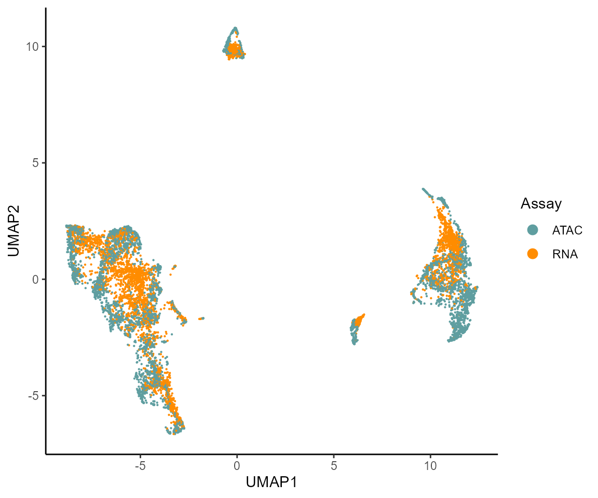
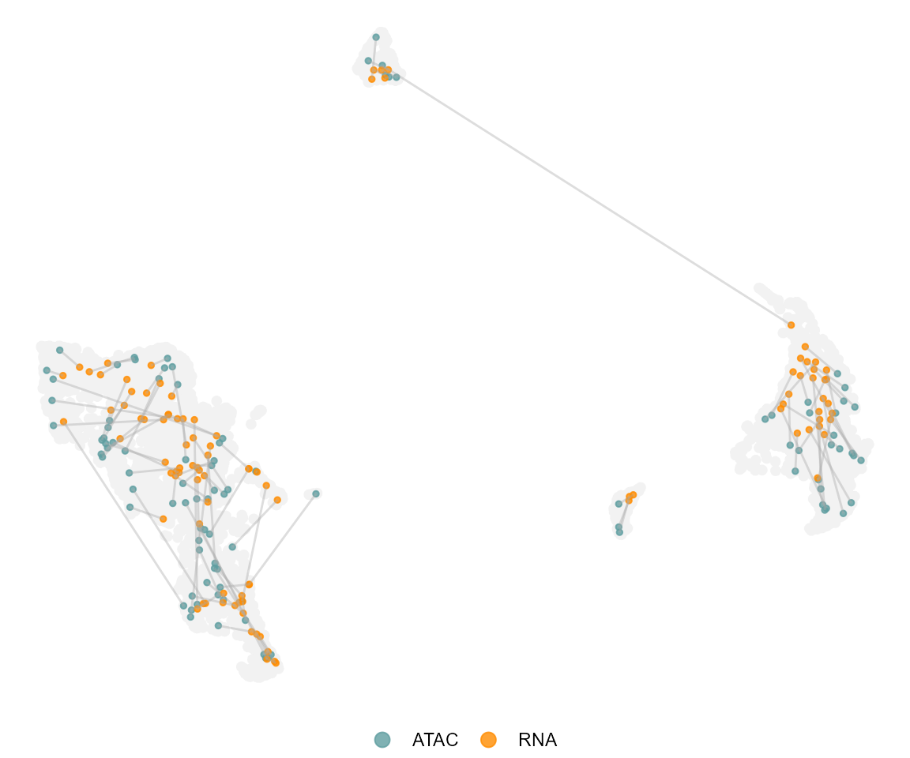
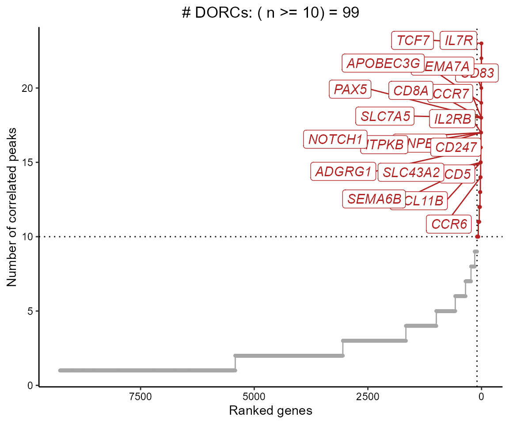
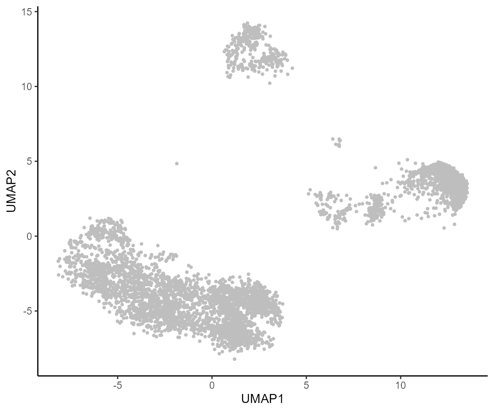
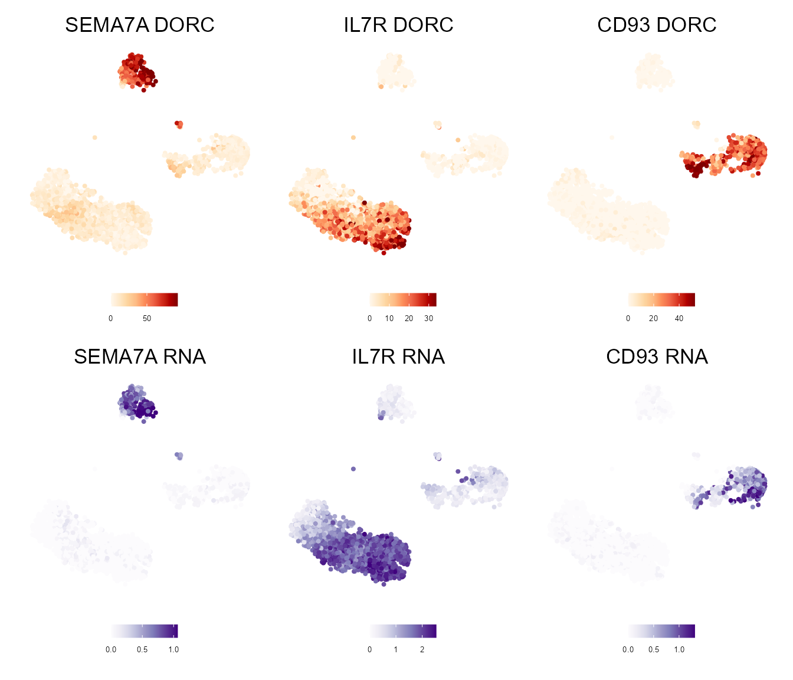
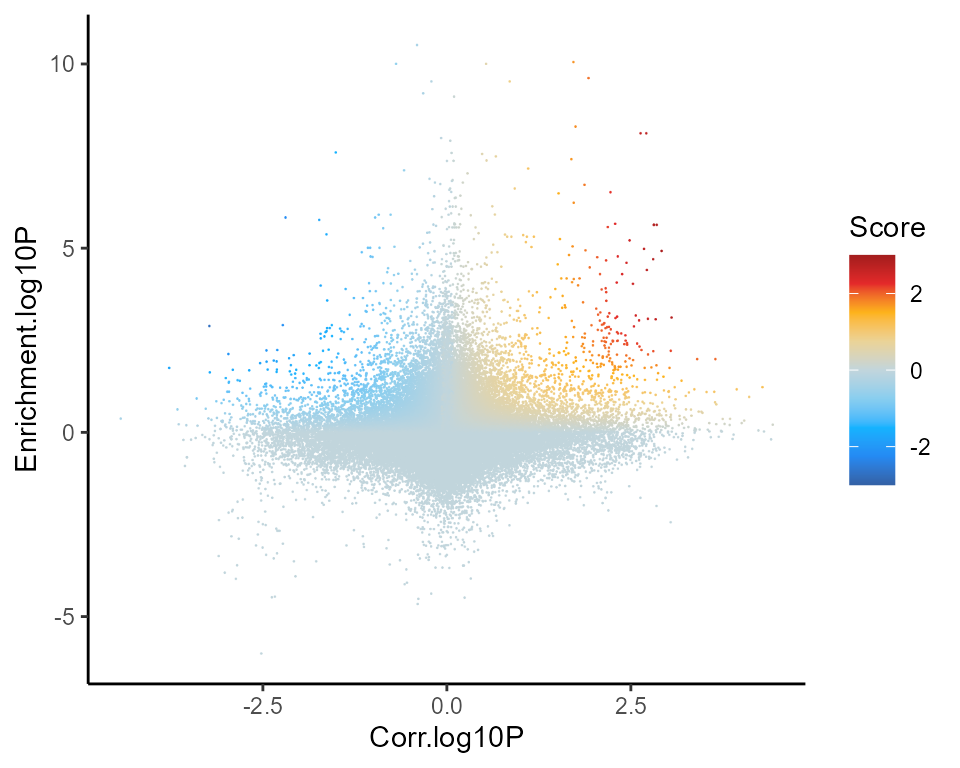
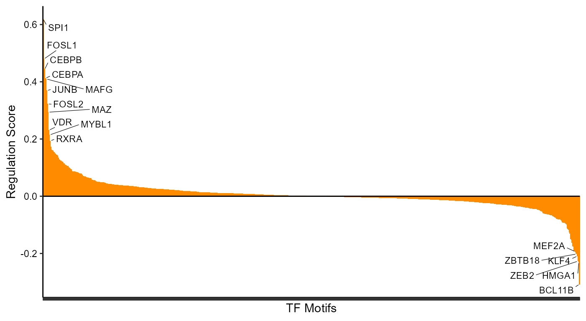
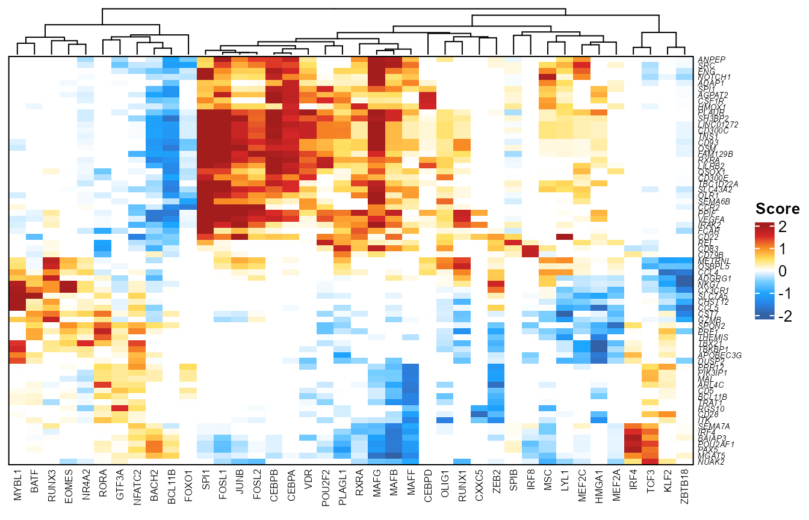

Analyzing independently assayed scATAC-seq and scRNA-seq data using FigR
Vinay Kartha
2022-03-13
Source:vignettes/FigR_stim.Rmd
FigR_stim.RmdRunning FigR on independently assayed scATAC-seq and scRNA-seq data
In many instances, we don’t have true multi-modal data (i.e. chromatin accessibility and gene expression profiled from the same single cell). In these cases, computationally determining “paired” cells across assays from the same cellular contexts is useful, and is a necessary first step prior to performing downstream analysis, including the cis-regulatory correlation analyses (i.e. peak-to-gene associations) and gene regulatory network inference steps that are part of the FigR framework.
Here we demo the application of the FigR workflow to independently generated scATAC-seq and scRNA-seq data using a subset of the data generated and analyzed in the associated manuscript 1
Data downloads / Pre-processing
Here, we will use a subset of the PBMC stimulus dataset pertaining to DMSO (Control_1h) condition cells for which we have independently profiled scATAC-seq and scRNA-seq data. The data used in this tutorial can be downloaded (WARNING: Downloading this data will take up ~ 71 MB of your hard drive space) as shown below. We then set the unzipped directory (destination folder) to be the working directory, prior to loading the R objects.
Please see this vignette on applying FigR to multi-modal data for more details on the input object data structures, function parameters, and run time
# Directory where data will be downloaded to
workingDir <- "/Users/vinay/Documents/FigR_package/biorad"
stimZip <- "https://s3.us-east-1.amazonaws.com/vkartha/FigR/FigR_stim.zip"
download.file(url = stimZip,
destfile = paste(workingDir,basename(stimZip),sep = "/"))
unzip(zipfile = paste(workingDir,basename(stimZip),sep = "/"),exdir = workingDir,overwrite = FALSE)
setwd(workingDir)As before, let us load some dependencies, including the main FigR package
library(doParallel)
library(BuenColors)
library(FigR)#> Warning: package 'cowplot' was built under R version 4.0.4
library(BSgenome.Hsapiens.UCSC.hg19)Here, we require/load the following input objects:
- A
SummarizedExperimentobject of peaks x cells, housing the scATAC-seq reads in accessibility peaks raw counts, along with theGRangesof the peaks used asRowRangesinfo - A normalized
sparseMatrixobject of genes x cells, housing the scRNA-seq gene counts (e.g. exported fromSeurat) - Previously computed canonical correlation analyis (CCA) components (determined using the CCA pipeline in
Seurat) for both ATAC and RNA PBMCs - Latent Semantic Index (LSI) components for the scATAC-seq cells, used to derive cell k-nearest neighbors to smooth scores with (NOTE: In the multi-modal vignette, we show how you can use alternative cell embeddings to derive this kNN, such as
cisTopicscores. Essentially, you would use whichever reduced dimensions were used to project cells in 2D for visualization)
In this example, we show these inputs pertaining to independently generated scATAC and scRNA-seq data in human PBMCs. For simplicity, we only run this on a subset of cells (quality filtered, Control 1h DMSO condition cells for faster run-time). As a result, note that the results will be similar to what was presented in Kartha et al. , but not identical.
ATAC.se <- readRDS("./control1h_PBMC_atac_SE.rds")
RNAmat <- readRDS("./control1h_PBMC_RNAnorm.rds")
dim(ATAC.se) # Peaks x ATAC cells#> [1] 219136 5352
dim(RNAmat) # Genes x RNA cells#> [1] 15584 3508Since we’re going to integrate the two datasets here (unpaired as of now), we will use a shared co-embedding that can be generated for both ATAC and RNA cells. See this tutorial for examples of how this can be done. In our case, we used the union of the top variable ATAC genescores (based on a fixed window around each gene’s TSS), and top variable RNA genes across all cells, and performed a CCA using the resulting features and all ATAC/RNA cells as input to the RunCCA function. There are now alternative approaches that are faster / scale better for co-embedding larger datasets, including the RPCA framework implemented in the Seurat package.
# Load CCA components (used for pairing)
# This was derived by running CCA (using all cells) between the original ATAC/RNA data using the top variable scATAC-seq gene scores and scRNA-seq gene expression
CCA_PCs <- readRDS('./control1h_PBMC_atac_rna_CCA_l2.rds')
dim(CCA_PCs) # ATAC + RNA (rows), n components (columns)#> [1] 8860 50
# This is just to differentiate ATAC/RNA from the combined matrix of CCA components so they can be separated for pairing
# Based on barcode naming conventions to differentiate ATAC/RNA in our
head(rownames(CCA_PCs)) # ATAC cells#> [1] "Control_1h_Donor1_S1_BC0004_N01" "Control_1h_Donor1_S1_BC0006_N01"
#> [3] "Control_1h_Donor1_S1_BC0008_N01" "Control_1h_Donor1_S1_BC0009_N01"
#> [5] "Control_1h_Donor1_S1_BC0010_N01" "Control_1h_Donor1_S1_BC0012_N01"#> [1] "Control_1h_Donor4_tgtagtggagttgcacgttgg"
#> [2] "Control_1h_Donor4_aatggccgcacagccgcgctt"
#> [3] "Control_1h_Donor4_cggccaggtcggttttggtta"
#> [4] "Control_1h_Donor4_ggcaggctccttaactggcat"
#> [5] "Control_1h_Donor4_gcagtgtactacgactggcat"
#> [6] "Control_1h_Donor4_tcagcaatcgcgcattcctct"#> isATAC
#> FALSE TRUE
#> 3508 5352
ATACcells <- rownames(CCA_PCs)[isATAC]
RNAcells <- rownames(CCA_PCs)[!isATAC]
cat("ATAC cells in condition: ",length(ATACcells),"\n")#> ATAC cells in condition: 5352#> RNA cells in condition: 3508We can now visualize UMAP of the ATAC-RNA cell co-embedding, coloring cells by the assay they come from (similar / shared cell states across the two assays should co-localize to some degree in 2D)
nPCs <- 20 # Num CCA PCs to use when running UMAP / pairing
# Run UMAP
set.seed(123)
umap.out <- uwot::umap(CCA_PCs[,1:nPCs],
metric="cosine",
n_neighbors=30)
umap.d <- as.data.frame(umap.out)
colnames(umap.d) <- c("UMAP1","UMAP2")
rownames(umap.d) <- rownames(CCA_PCs)
umap.d$Assay <- ifelse(isATAC,"ATAC","RNA")
BuenColors::shuf(umap.d) %>%
ggplot(aes(UMAP1,UMAP2,color=Assay)) +
geom_point(size=0.1) +
theme_classic() +
scale_color_manual(values = c("cadetblue","darkorange"))+
guides(colour = guide_legend(override.aes = list(size=3)))
Now, we use these co-embeddings to pair cells using our geodesic distance-based pairing approach. We do this step using the pairCells function, providing the separate ATAC and RNA cell components as input as highlighted below:
ATAC_PCs <- CCA_PCs[isATAC,]
RNA_PCs <- CCA_PCs[!isATAC,]
pairing <- pairCells(ATAC = ATAC_PCs,
RNA = RNA_PCs,
keepUnique = TRUE)By setting the keepUnique parameter specified above to TRUE, we further filter cells such that each ATAC cell barcode only appears once in the resulting pairs (in the case above).
We can now visualize the resulting ATAC-RNA pairs on the CCA UMAP
plotPairs(ATAC = pairing$ATAC,
RNA=pairing$RNA,
max.show = 100,
umap.df = umap.d)#> Assuming concordance in pairs ..
#> Only highlighting 100 pairs at random..#> Loading required package: ggrastr#> Warning: package 'ggrastr' was built under R version 4.0.4
As the final step, we subset the ATAC and RNA count objects to match the determined ATAC-RNA paired cells, and use these as input in later steps
ATAC.se.paired <- ATAC.se[,pairing$ATAC]
RNAmat.paired <- RNAmat[,pairing$RNA]Peak-gene association testing
# Don't run interactively
cisCorr <- runGenePeakcorr(ATAC.se = ATAC.se.paired,
RNAmat = RNAmat.paired,
genome = "hg19", # One of hg19, mm10 or hg38
nCores = 4,
p.cut = NULL, # Set this to NULL and we can filter later
n_bg = 100)Determining DORCs
We can now filter correlations based on the background p-value, and summarize the genes that have a relatively high number of peak-gene associations (i.e. Domains of regulatory chromatin or ‘DORCs’)
head(cisCorr)#> Peak PeakRanges Gene rObs pvalZ
#> 1 2 chr1:713966-714266 LINC01128 0.018159834 0.100025782
#> 2 5 chr1:756685-756985 LINC01128 0.004361716 0.318375663
#> 3 8 chr1:777265-777565 LINC01128 0.006061255 0.165574826
#> 4 19 chr1:839948-840248 SAMD11 0.003911159 0.289553871
#> 5 23 chr1:848168-848468 SAMD11 0.045598153 0.005385101
#> 6 26 chr1:859076-859376 SAMD11 0.031427158 0.107115444
cisCorr.filt <- cisCorr %>% filter(pvalZ <= 0.05)
library(ggplot2)
dorcGenes <- dorcJPlot(dorcTab = cisCorr.filt,
cutoff = 10, # No. sig peaks needed to be called a DORC
labelTop = 20,
returnGeneList = TRUE, # Set this to FALSE for just the plot
force=5)
We can also just get the full ranked table of genes and number of significantly associated peaks, instead of only getting the gene names (so you can threshold yourself)
#> # A tibble: 9,272 x 2
#> Gene n
#> <chr> <int>
#> 1 IL7R 23
#> 2 TCF7 23
#> 3 CD83 22
#> 4 SEMA7A 20
#> 5 APOBEC3G 19
#> 6 CCR7 18
#> 7 CD8A 18
#> 8 PAX5 18
#> 9 SLC7A5 18
#> 10 ANPEP 17
#> # ... with 9,262 more rowsSince these are unstimulated (control) PBMCs, we expect most of these genes to be lineage-determining markers.
Visualizing DORCs
To get the DORC accessibility scores, we can sum up the chromatin accessibility peak counts for peaks associated with a given gene.
NOTE: It is crucial that you use the exact same
SummarizedExperimentobject here as the one that was used in therunGenePeakcorrstep
dorcMat <- getDORCScores(ATAC.se = ATAC.se.paired, # Has to be same SE as used in previous step
dorcTab = cisCorr.filt,
geneList = dorcGenes,
nCores = 4)#> ........
#> Normalizing scATAC counts ..
#> Centering counts for cells sequentially in groups of size 5000 ..
#>
#> Computing centered counts for cells: 1 to 4912 ..
#> Computing centered counts per cell using mean reads in features ..
#>
#> Merging results..
#> Done!
#> Computing DORC scores ..
#> Running in parallel using 1 cores ..
#>
#> Time Elapsed: 10.3236038684845 secs
dim(dorcMat)#> [1] 99 4912We then plot these scores, along with the paired RNA expression onto the original scATAC-seq UMAP. Here’s a look at what that 2D embedding looks like (also highlighted in the manuscript), just for this subset of cells:
colData(ATAC.se.paired) %>%
as.data.frame() %>%
ggplot(aes(UMAP1,UMAP2)) +
geom_point(color="gray",size=0.8)+ theme_classic()
We can then smooth these (sparse) DORC counts, and visualize side-by-side with the expression, on the same UMAP. In this particular case, we use the original Latent Semantic Indexing (LSI) cell embeddings that were pre-determined using all cells (using which the 2D UMAP was determined), subset to the cells being used, and then derive cell k-nearest neighbors, which we will use to smooth both the DORC and [aired RNA expression, for the same UMAP:
lsi <- readRDS("./control1h_PBMC_atac_lsi.rds")
dim(lsi)
stopifnot(all(colnames(dorcMat) %in% rownames(lsi)))
# Subset to paired ATAC
lsi <- lsi[colnames(dorcMat),]
dim(lsi)
# Get cell KNNs
cellkNN <- FNN::get.knn(lsi,k=30)$nn.index
rownames(cellkNN) <- colnames(dorcMat)
# Smooth dorc scores using cell KNNs (k=30)
library(doParallel)
dorcMat.s <- smoothScoresNN(NNmat = cellkNN,mat = dorcMat,nCores = 4)
# Smooth RNA using cell KNNs
# This takes longer since it's all genes
colnames(RNAmat.paired) <- colnames(ATAC.se.paired) # Just so that the smoothing function doesn't throw an error (matching cell barcodes in the KNN and the matrix)
RNAmat.s <- smoothScoresNN(NNmat = cellkNN,mat = RNAmat.paired,nCores = 4)
# Visualize on pre-computed UMAP
# This is the ATAC UMAP shown in the paper (based on ATAC LSI)
umap.d <- as.data.frame(colData(ATAC.se.paired)[,c("UMAP1","UMAP2")])
# DORC scores for top DORC(s)
myDORCs <- c("SEMA7A","IL7R","CD93")
dorcGGlist <- lapply(myDORCs,function(x) {
plotMarker2D(umap.d,
dorcMat.s,
markers = x,
maxCutoff = "q0.99",
colorPalette = "brewer_heat"
) + ggtitle(paste0(x," DORC"))
})#> Plotting SEMA7A
#> Plotting IL7R
#> Plotting CD93
# Paired RNA expression for top DORC(s)
# Plot on the same reference ATAC UMAP
rnaGGlist <- lapply(myDORCs,function(x) {
plotMarker2D(umap.d,
RNAmat.s,
markers = x,
maxCutoff = "q0.99",
colorPalette = "brewer_purple"
) + ggtitle(paste0(x," RNA"))
})#> Plotting SEMA7A
#> Plotting IL7R
#> Plotting CD93#> Warning: package 'patchwork' was built under R version 4.0.4
(dorcGGlist[[1]] + dorcGGlist[[2]] + dorcGGlist[[3]]) / (rnaGGlist[[1]] + rnaGGlist[[2]] + rnaGGlist[[3]])
TF-gene associations
As before, we can now determine TF-gene associations, and begin inferring a regulatory network based on the previous DORC definitions, together with information drawn from a database of TF binding sequence motifs
figR.d <- runFigRGRN(ATAC.se = ATAC.se.paired, # Must be the same input as used in runGenePeakcorr()
dorcTab = cisCorr.filt, # Filtered peak-gene associations
genome = "hg19",
dorcMat = dorcMat.s,
dorcK = 5,
rnaMat = RNAmat.s,
nCores = 4)Visualizing FigR results
Global regulation profile
Scatter of correlation (x) and motif enrichment (y)
figR.d %>%
ggplot(aes(Corr.log10P,Enrichment.log10P,color=Score)) +
ggrastr::geom_point_rast(size=0.01,shape=16) +
theme_classic() +
scale_color_gradientn(colours = jdb_palette("solar_extra"),limits=c(-3,3),oob = scales::squish,breaks=scales::breaks_pretty(n=3))
Looking at the top TFs associated with DORCs
Ranking TF drivers
rankDrivers(figR.d,rankBy = "meanScore")#> Warning: ggrepel: 63 unlabeled data points (too many overlaps). Consider
#> increasing max.overlaps
rankDrivers(figR.d,score.cut = 1.5,rankBy = "nTargets",interactive = TRUE)You can also set the interactive parameter (which the rankDrivers function takes) to TRUE, which will let you hover over points and provide some extra information in terms of the number of estimated activated vs repressed genes
Heatmap view
library(ComplexHeatmap)
plotfigRHeatmap(figR.d = figR.d,
score.cut = 1.5,
column_names_gp = gpar(fontsize=6), # from ComplexHeatmap
show_row_dend = FALSE # from ComplexHeatmap
)
Network view
#> Warning: package 'networkD3' was built under R version 4.0.5
plotfigRNetwork(figR.d,
score.cut = 1.5,
weight.edges = TRUE)